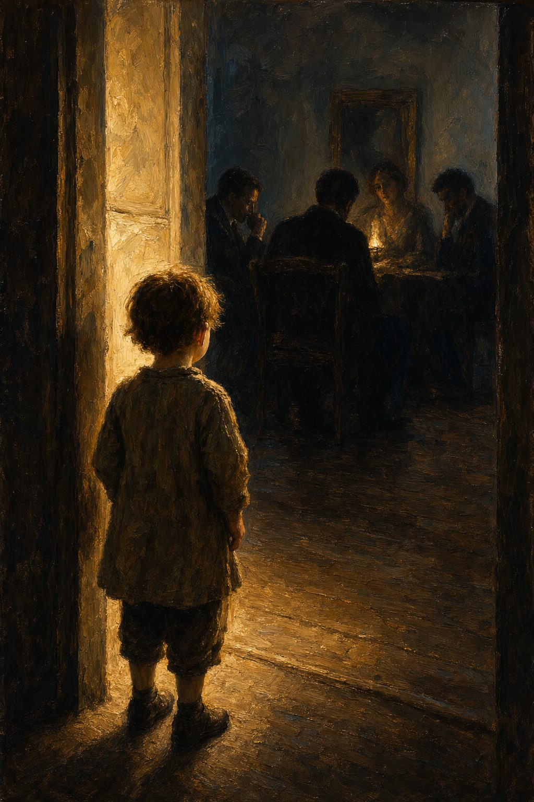

Первочувство
Что такое первый слой и как мы его ощущаем
Глава · 12 мин чтения

Якобус ван Меркстейн
Ребёнок четырёх лет входит в комнату. Там сидят трое взрослых. Никого из них он не знает. Через десять секунд ребёнок знает, кто здесь настоящий. Не в смысле иерархического могущества — это понятие ему ещё недоступно. Но он знает, кто действительно присутствует, а кто притворяется. Знает, кто боится, а кто излучает безопасность. Знает, к кому хочет подсесть. Это знание не требует слов. Не требует аргументов. Оно просто есть — прямое, полное, как компас, указывающий на север.
Вот это и есть первочувство.
Я описывал его в выпуске 2, но там — как личное достояние, как нечто, что мне случайно удалось сохранить, потому что моя мать, ограждая меня от мира, ограждала меня и от того износа, который у почти всех это первочувство выжимает досуха. Эта статья не обо мне. Она о самой этой способности — и о том, что мы с ней делаем как общество.
Что такое первочувство и чем оно не является
Первочувство — не интуиция в расплывчато-популярном смысле. Не ощущение, что нужно что-то сделать, непонятно почему, которое потом может оправдаться или нет. Это угадывание. Первочувство точнее угадывания. Это прямая связь между восприятием и пониманием, без промежуточного этапа языкового рассуждения. Работает в реальном времени, с ситуацией прямо перед тобой. Собака, оценивающая человека на страх или спокойствие, делает в точности то же самое — и поразительно точно. Младенец, решающий, звучит ли голос безопасно, не зная ни одного слова, делает в точности то же самое.
Неврологически этому есть своё место в древнейших частях мозга — в миндалине, базальных ганглиях, структурах, которые мы разделяем с каждым млекопитающим, ходившим по земле до нас. Задолго до того, как в ходе эволюции появилась неокора как языкоперерабатывающая машина, эти структуры уже обрабатывали информацию о внешнем мире. Не через рассуждение, а через распознавание паттернов, через прямой отклик на ситуацию. Быстрее, чем кора когда-либо успеет порассуждать, и во многих ситуациях надёжнее — потому что кора всегда фильтрует, задерживает и искажает в направлении того, что ожидает увидеть.
Не через рассуждение, а через распознавание паттернов, через прямой отклик на ситуацию.
Первочувство — это не противоположность мышления. Это его предшественник. Это фундамент, на котором держится всё, что приходит после. Кто теряет этот фундамент — тот имеет знания, но не компас.
Почему оно есть у детей и животных
У детей и животных первочувство относительно сохранно, потому что давление социальной коррекции на них ещё почти не действует. Ребёнок двух лет, входя в комнату и видя незнакомца, реагирует сразу — с радостью, осторожностью или страхом. Эта реакция — информация. Она содержит оценку, которой ребёнок при своих ограниченных когнитивных возможностях не смог бы достичь иначе. Оценка не всегда точна до идеала. Но она и не произвольна. Она функциональна — произведена системой, отточенной в ходе эволюции именно для такого быстрого социального считывания.
Собака оценивает человека на страх или спокойствие в первые две секунды контакта. Она не требует обоснований. Она не берёт время на анализ. Она читает ситуацию напрямую, и её оценка статистически надёжнее большинства человеческих когнитивных суждений о тех же ситуациях. Это не чудо — это результат эволюционного отбора. В мире прямых опасностей быстрое распознавание ситуации критически важно. Система, которая слишком медленна, требует слишком много промежуточных шагов, — в таком мире смертоносна.
Дети в самые ранние годы — эксперты первочувства, не вопреки ограниченному когнитивному развитию, а отчасти именно благодаря ему. Кора ещё не полностью задействована как фильтр. Что они чувствуют, то чувствуют в полную силу. Они ещё не выучили, что чувства опасны, или ненаучны, или незрелы. Эти уроки приходят позже. И они приходят систематически.
Как школьная система это искореняет
Самая прямая атака на первочувство — фраза, которую каждый ребёнок в первые школьные годы слышит сотни раз: «Можешь обосновать?»
Сама по себе эта фраза не зловредна. В правильном контексте — высказывание о реальности, которое нужно проверить, план, который нужно продумать, — это вполне законный вопрос. Но когда он становится единственным законным вопросом, когда он превращается в стандартный ответ на любое прямое ощущение, которое ребёнок произносит вслух, — он разрушителен. Потому что первочувство работает именно через пропуск этапа коры. Оно долингвально по своей природе. Оно не даёт аргумент. Оно даёт прямое знание.
Что происходит дальше, когда ребёнок систематически слышит, что знание без аргумента не считается: он учится не доверять своему прямому ощущению. «Я чувствую, что это неправильно» сменяется на «не знаю, наверно, поверю». К тому времени, когда ребёнок действительно может дать обоснование — а он учится рассуждать, в этом система сильна, — само чувство уже исчезло. Кора взяла верх. Остаётся мыслитель, который сам по себе неплох, но потерял свой глубочайший источник информации.
Что происходит дальше, когда ребёнок систематически слышит, что знание без аргумента не считается: он учится не доверять своему прямому ощущению.
Прусский скелет нашего образования — сидеть тихо по сигналу, давать правильный ответ, определённый кем-то другим, реагировать, когда разрешено, — имеет этот эффект как структурную особенность. Не как досадный побочный эффект, а именно как особенность. Система создавалась для промышленной революции, которой нужны были послушные, предсказуемые, поддающиеся групповой координации работники. В этой цели она блестяще преуспела. Но ценой стало первочувство, и эта цена теперь видна практически во всём, что мучает цивилизацию.
Есть ещё экранное время. Смартфоны, планшеты, стриминговые платформы — все созданы для максимального захвата внимания через максимальный стимул. Первочувство работает в тишине, в медлительности, в непрерывном присутствии при одной ситуации. Оно считывает людей и ситуации — но медленно и глубоко. Ребёнок, проводящий у экрана четыре часа в день, четыре часа в день подвергается воздействию среды, которая активно заглушает его прямое ощущение. Через годы не только притупляется первочувство — исчезает сама базовая способность к тишине. А кто не умеет молчать, тот не может слышать себя.
Что теряет общество
Три кризиса, одна причина.
Климатический кризис в своей глубинной основе — не информационная проблема. Графики есть. Научный консенсус однозначен. И тем не менее поведение не меняется в нужном масштабе. Это не равнодушие. Это следствие жизни в обществе, которое научилось понимать реальность как систему чисел и аргументов, но утратило способность чувствовать реальность как живое целое, частью которого само является. Факты не приводят людей в движение. В движение приводит ощущение. Ощущение было систематически уничтожено.
Кризис поляризации — не кризис мнений. Два человека не могут вступить в подлинный контакт, если утратили способность напрямую чувствовать, что присутствует в другом. Когда кора — единственный навигационный инструмент, любое разногласие превращается в позиционный торг, борьбу за власть, соревнование, у кого убедительнее аргумент. Прямое ощущение — способность до слов знать, что действительно движет другим, в чём его страх, что он имеет в виду под позицией, которую отстаивает, — эта способность исчезла. Без неё нет диалога. Есть только дебаты.
Эпидемии выгорания и одиночества — это кризис неумения слышать, что говорит тело, и неумения рискнуть показать настоящее себя. Выгорание — момент, когда тело отказывается поддерживать работу коры в режиме переопределения: точка, в которой десятилетия игнорирования сигналов предъявляют счёт. Одиночество — это не нехватка чужого присутствия. Это нехватка настоящего контакта, того, чтобы тебя увидели на уровне, на котором ты реально существуешь. А этот уровень — уровень чувств, доступный только через первочувство с обеих сторон.
Это не три отдельные проблемы. Это одна проблема, проявляющаяся в четырёх сферах: природа, политика, труд и отношения. Общий знаменатель — утрата первочувства как работающего компаса.
Промышленная ошибка первого порядка
Я хочу быть здесь ясным насчёт серьёзности того, что утверждаю, — потому что это звучит крупно, и люди склонны релятивизировать такого рода утверждения.
Модернизация образования после промышленной революции породила систему, которая в массовом порядке, организованно и целенаправленно вытравляет самую фундаментальную человеческую способность. Не у меньшинства, а у практически всех. Не как побочный эффект, а как структурный результат того, что система делает. И это — в тот момент человеческой истории, когда именно эта способность нужна острее всего, потому что одна только кора никогда не справится с проблемами, которые нас ждут.
Климатические изменения не решить с помощью лучше обученных исполнителей существующих мыслительных рамок. Экологическую деградацию не остановить более эффективной адаптацией существующей производственной системы. Геополитические напряжённости, вытекающие из нехватки ресурсов и неравенства, не поддаются управлению со стороны опытных дипломатов, которые работают в том же корковом сознании, что породило эти напряжённости. То, что нужно, — это люди, способные читать реальность иначе, чем позволяют имеющиеся категории. Люди, у которых сохранена прямая связь между восприятием и пониманием. Люди, решающиеся действовать из ощущения, которое ещё не оформилось в обоснованный тезис.
Такие люди существуют. Они редки — не потому, что природа скупо их наделяет, а потому что система их планомерно выдавила. Каждый рождающийся ребёнок это имеет. Система тратит восемнадцать лет, чтобы вытравить это. В большинстве случаев ей это удаётся полностью.
Вот это и есть промышленная ошибка первого порядка. Не в смысле технической неполадки — система отлично функционирует для того, что она делает. Но в смысле фундаментальной дезориентации: мы построили то, что было нужно девятнадцатому веку, и запустили это так, словно по-прежнему живём в девятнадцатом веке. Цена не абстрактна. Цена видна в каждой газете, в каждом разговоре, в каждом докладе о психическом здоровье, в каждом климатическом соглашении, которое не выполняется.
Ребёнок четырёх лет, который входит в комнату и сразу знает, кто здесь настоящий, — этот ребёнок обладает тем, в чём общество отчаянно нуждается. Вопрос в том, готовы ли мы перестать это выжимать.
Для тех, кто хочет читать дальше: полная теоретическая разработка первочувства и трёх слоёв мозга содержится в работе Мыслительная база для 7-мерной модели чувств, а практический перевод в педагогику и воспитание — в Манифесте об образовании и воспитании. Оба произведения доступны для скачивания на openvizier.org.
Первочувство, которое мы выжимаем из наших детей
Ребёнок четырёх лет входит в комнату. Через десять секунд он знает, кто здесь настоящий. Это знание не требует слов. Это и есть первочувство.
«Кто теряет этот фундамент — тот имеет знания, но не компас.»
Что это такое — и как школа это убивает
Первочувство — не интуиция в расплывчатом смысле. Это прямая связь между восприятием и пониманием, без промежуточного языкового рассуждения. Неврологически — это миндалина, базальные ганглии, структуры старше коры. Быстрее. И во многих ситуациях надёжнее.
Самая прямая атака на него — фраза, которую каждый ребёнок слышит сотни раз: «Можешь обосновать?» Первочувство долингвально по природе. Оно не даёт аргумент. Оно даёт прямое знание. Систематически требуя обоснований, мы учим детей не доверять своему прямому ощущению.
Три кризиса — одна причина
Это не три отдельные проблемы. Это одна проблема в четырёх сферах: природа, политика, труд и отношения.
Промышленная ошибка первого порядка
Мы построили то, что было нужно девятнадцатому веку, и запустили это так, словно по-прежнему живём в девятнадцатом. Система планомерно, организованно, из поколения в поколение вытравливает самую фундаментальную человеческую способность. Не у меньшинства — у практически всех.
Каждый рождающийся ребёнок это имеет. Система тратит восемнадцать лет, чтобы вытравить это. В большинстве случаев ей это удаётся полностью.
Ребёнок четырёх лет, который входит в комнату и сразу знает, кто здесь настоящий, — этот ребёнок обладает тем, в чём общество отчаянно нуждается. Вопрос в том, готовы ли мы перестать это выжимать.